פיתוח ובנייה
אתרים, מערכות וכלים שבניתי
הכל נבנה בעזרת בינה מלאכותית: גרסה ראשונה תוך ימים, בעברית, ובבעלות מלאה של מי שהזמין.
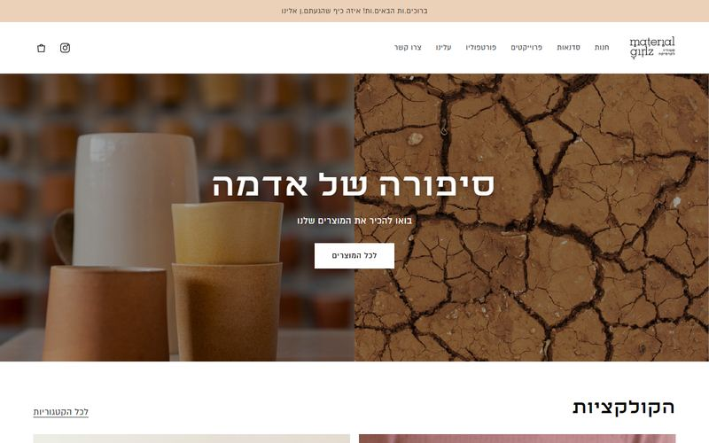
סטודיו לקרמיקה: סדנאות, הרשמה ותשלום
אתר שמחליף חנות בתשלום חודשי. פאנל ניהול לבעלות הסטודיו ואזור אישי לתלמידות.
עולה לאוויר בקרוב
תפריט המגדלור לרשויות מקומיות
תפריט של כלים, הכשרות ותוכניות לחיזוק הדמוקרטיה ברשות המקומית, לפי תחומי פעולה.
לאתר ←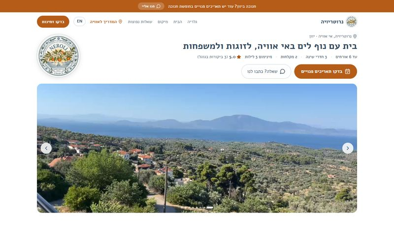
בית נופש באי אוויה
עברית ואנגלית, יומן תפוסה שמתעדכן לבד, ומפת המלצות.
לאתר ←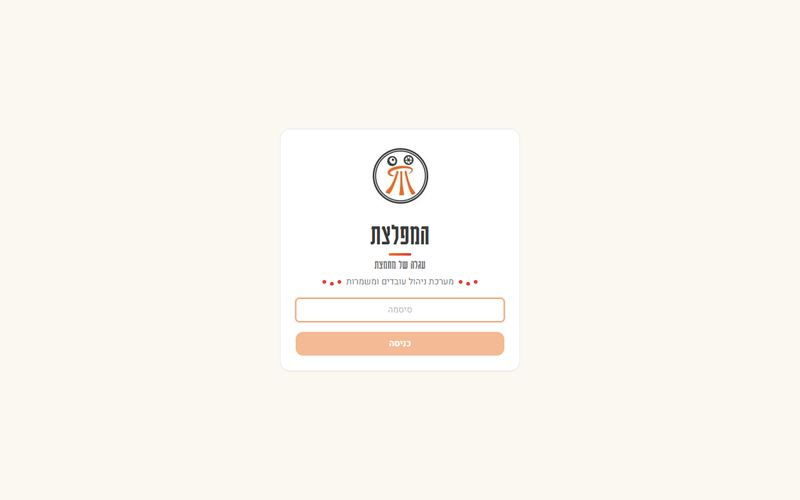
שיבוץ עובדים ומשמרות
זמינות, שיבוץ ותזכורות לעובדים, מהטלפון. כניסה לעובדים בלבד.
מערכת פנימית
מחולל דו"ח חברתי להתחדשות עירונית
ממלאים שלב אחרי שלב לפי מדריך 3.0 של הרשות להתחדשות עירונית, ומקבלים דו"ח. כלי עזר עצמאי.
לכלי ←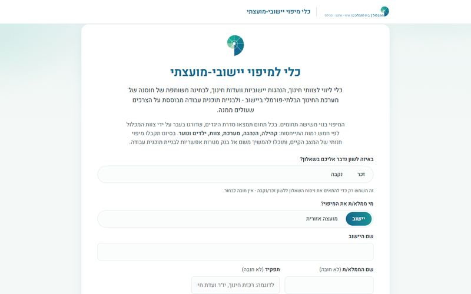
כלי מיפוי יישובי-מועצתי
צוותי חינוך והנהגות יישוביות ממפים את החינוך הבלתי-פורמלי ביישוב, ומקבלים מיפוי חזותי.
לכלי ←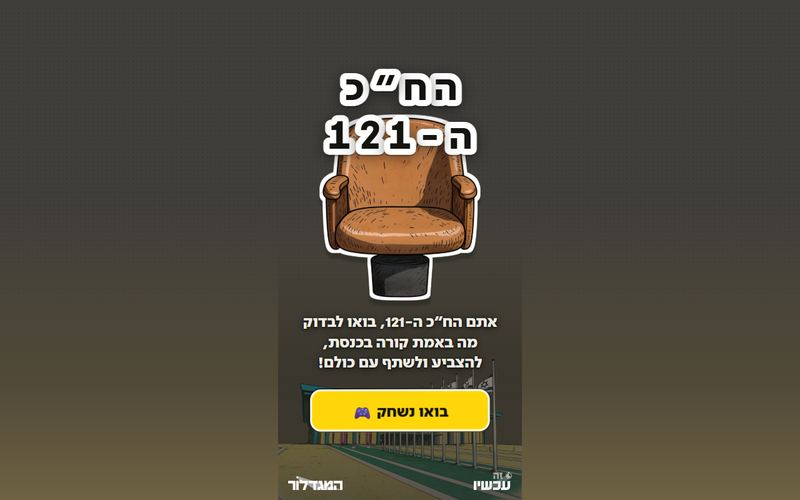
הח"כ ה-121
משחק לצעירים לקראת הבחירות: נכנסים לכנסת כח"כ ה-121, מצביעים ומשתפים.
לאתר ←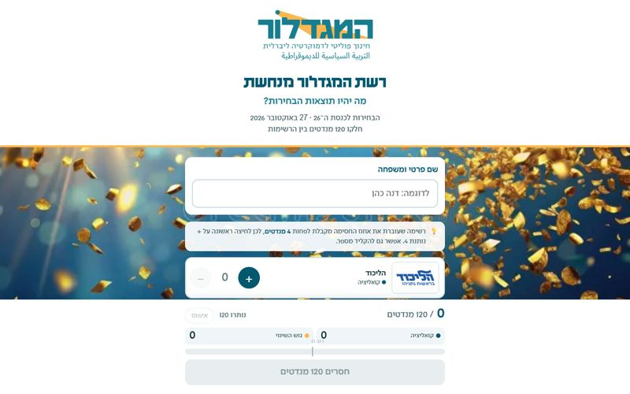
משחק ניחוש תוצאות הבחירות
מחלקים 120 מנדטים בין הרשימות, והזוכה נקבע לפי הקרבה לתוצאות הרשמיות.
למשחק ←
מצפה הרשויות
257 רשויות מקומיות, 38 מדדים, מפה וזיהוי חריגות. מנתוני הלמ"ס והביטוח הלאומי.
לדשבורד ←
מפת המלצות לאי אוויה
עשרות מקומות על מפה: חופים, מסעדות וטיולים, עם סינון.
למפה ←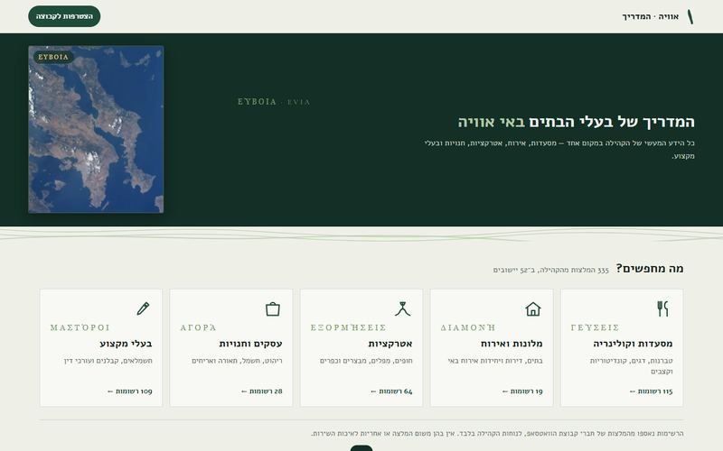
המדריך של בעלי הבתים באוויה
מסעדות, אירוח, אטרקציות, חנויות ובעלי מקצוע, מהמלצות של הקהילה.
לאתר ←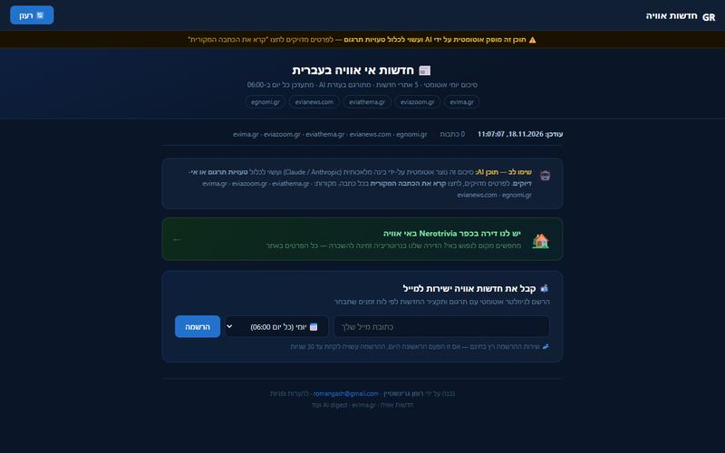
חדשות אוויה בעברית
סיכום יומי אוטומטי בעברית מחמישה אתרי חדשות מקומיים, מתורגם בעזרת AI.
לאתר ←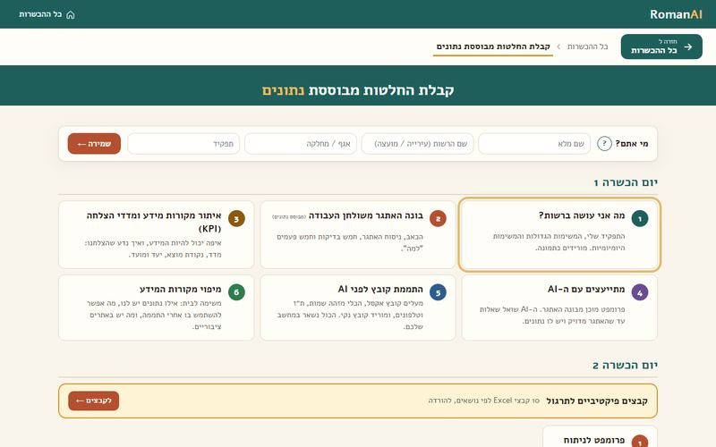
ערכת הכלים של ההכשרות
עשרות כלי סדנה: בוני פרומפטים, עץ בעיות, התממה ועוד.
לכלים ←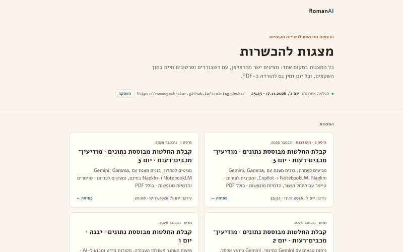
מצגות ההכשרות
מצגות בדפדפן, בעברית, עם הדגמות חיות בתוך השקפים.
למצגות ←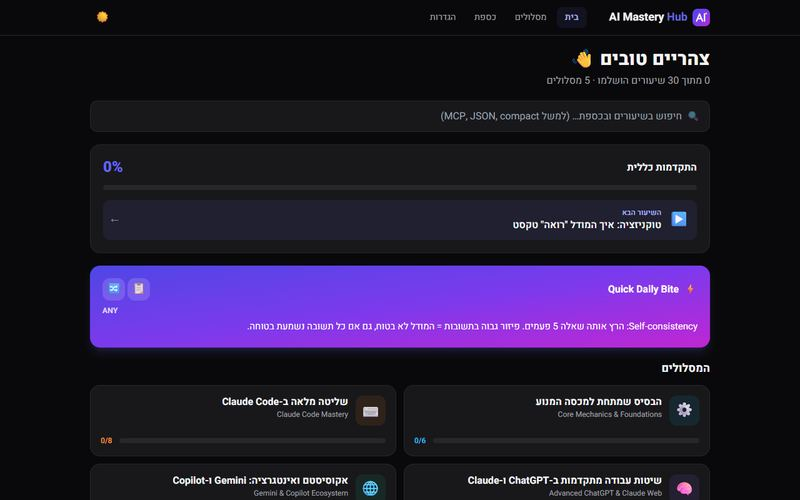
מרכז לימוד אישי ל-AI
אפליקציה לטלפון: 30 שיעורים על Claude, ChatGPT, Gemini ו-Copilot, עם מעקב התקדמות.
לכלי ←